Banda Charlie Brown Jr
Charlie Brown Jr foi uma banda brasileira de rock formada em Santos no ano de 1992. As
canções da banda misturavam vários gêneros musicais como o punk, reggae, rap, e skate
punk, criando assim um estilo próprio e original. Suas letras faziam diversas
críticas à sociedade, além de uma abordagem da perspectiva do universo jovem contemporâneo.
No dia 6 de março de 2013, Chorão, o vocalista do grupo, morreu em seu apartamento em São Paulo devido a
uma overdose de cocaína e álcool.
Discografia
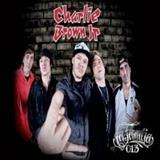
La Família 013
2013
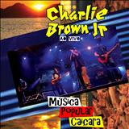Música Popular Caiçara
2012
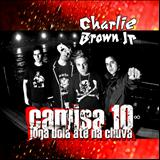Camisa 10 Joga Bola Até na Chuva
2009
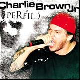Perfil
2008
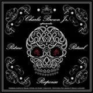Ritmo Ritual e Responsa
2007
Imunidade Musical
2005
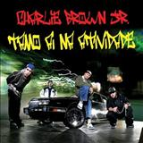Tamo Ai Na Atividade
2004
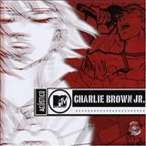Acústico MTV
2003
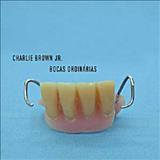Bocas Ordinárias
2002
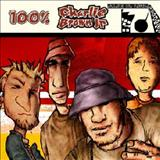Abalando a sua Fábrica
2001
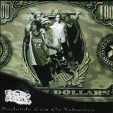Nadando Com Os Tubarões
2000
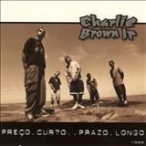Preço Curto... Prazo Longo
1999
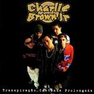Transpiração Contínua Prolongada
1997
"Pra quem tem pensamento forte o impossível é só questão de opinião." - Chorão -